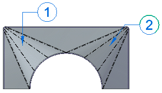
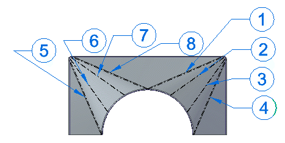
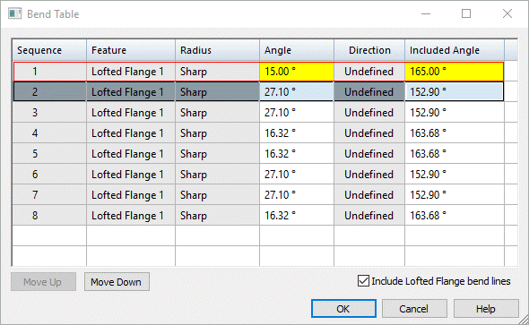
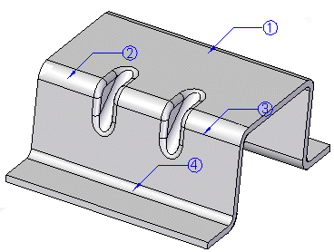
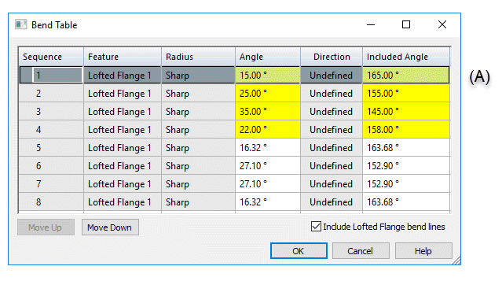
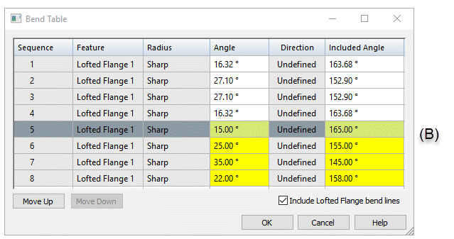
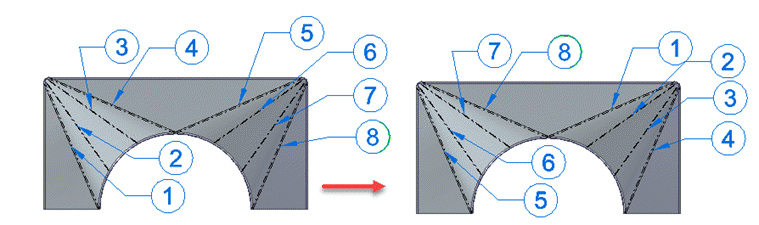

Bend tables
Creating bend tables in sheet metal
Bend data is captured automatically in the sheet metal document when you create a bent part. You can display the bend data on the designed part (the folded part) in the sheet metal model. The Bend Table command, located on the Tools tab, opens the Bend Table dialog box.

While the Bend Table dialog box is open, you can:
Modify the balloons displayed on the part.
Set the bend sequence for the part. You can reorder the bend sequence to prototype sheet metal part fabrication sequences.
Add and reorder data columns in the bend table.
Copy data from the bend table into another application, such as Excel or Word.
Including lofted flange bend lines in the bend table
You can use the Include Lofted Flange bend lines option on the Bend Table dialog box to include triangulation hit lines, which treats the bends individually and includes an entry for each bend in the table.
If you clear this option, the lofted flange will have one bend listed in the bend table per bend region.

If you set the option, the lofted flange lists each individual bend for the two bend regions.

You can select a row in the bend table and edit the computed angular values. The edited field is highlighted to reflect the changed value.

If you delete the edited value and then press Enter, the cell is reset to the computed value. When you select a row in the table, the corresponding bend is highlighted.
Setting bend sequence in the model
While the Bend Table dialog box is open, there are two ways to set bend sequence in the sheet metal model.
You can change the bend sequence by selecting a balloon in the graphics window and typing a sequence number as balloon text.
You can use the Move Up and Move Down buttons on the Bend Table dialog box to change the sequence of the bends.
As you change the sequence, the balloons update to reflect these changes.

If you select a bend (A) within a lofted flange bend region to reorder,

and click the Move Down button, all bends with in the region are reordered as a group (B).

The balloons for both transition regions update to reflect the new order.

This video describes how to use the options available for creating sheet metal bend tables.
Working with sheet metal bend tables
If you select a row in the Bend Table dialog box, the Edit Definition command bar is displayed for you to edit the balloons on the model. You can do such things as add or remove leader and break lines, add a prefix or suffix to the balloon, and change the text, shape, and size of the balloon. When you close the dialog box, the balloons are automatically hidden.
If you right-click a cell in the Bend Table dialog box, you can use the shortcut menu to do such things as copy and paste bend information, change the font, modify the column width, column alignment, and column order.
When you choose the Columns shortcut command, the Format Columns dialog box is displayed for you to choose the predefined data columns you want to display. These include the following:
Feature that contains the bend
Radius
Included Angle—This is the angle between the two inside faces adjacent to a bend (A).
Angle—This is the external angle of the bend from a flat piece of stock (B).

Direction—Bend direction is either up or down, or it is undefined if there is no associated sheet metal flat pattern.
You also can use the New Column... command to add:
Comment columns for providing additional information.
User-defined columns for simple text and property text.
The New Column... command is available when you right-click a column in the Bend Table dialog box.
Specifying bend table options
You can specify bend table options on the Annotation page of the Solid Edge Options dialog box in sheet metal, assembly, and draft documents.
You can customize bend direction strings for Up, Down, and Undefined bends. Undefined bend strings appear in sheet metal files that have not been flattened.
In the 3D model, each bend is represented as a bend centerline and is displayed with the defined edge color and a centerline style. In draft, you can create and assign independent styles to bend Up centerlines and to bend Down centerlines on the Annotations tab of the Solid Edge Options dialog box or in the Drawing View Properties dialog box.
By default, bend direction is derived from the face that is designated the “top” face when a sheet metal part is flattened. In draft, you can keep the model bend direction properly aligned with the flattened drawing view using the Derive Bend Direction from Drawing View option.
Adding bend tables to a drawing sheet
You can use the Bend Table command (Draft) to add a bend table to a drawing sheet. You also can automatically place annotations, either inline with the bend centerlines or as balloon callouts. You can use the Bend Table Properties dialog box to select the information you want to place in the bend table.
If you make changes to the bend table in sheet metal, use the Update command in draft to update the corresponding bend table on the drawing.
To learn the workflow for creating bend tables in the sheet metal part and showing the data on a drawing, see Save bend data with flat patterns.
How do I
Place a bend table on a drawing sheetCreate a bend table for the part
Look up more details
Bend Table command (Draft)Bend Table command (Sheet Metal)
Bend Table dialog box
Bend Table command bar (Draft)
Bend Table Properties dialog box
Bend Callouts page (Bend Table Properties dialog box)
Update Bend Table command